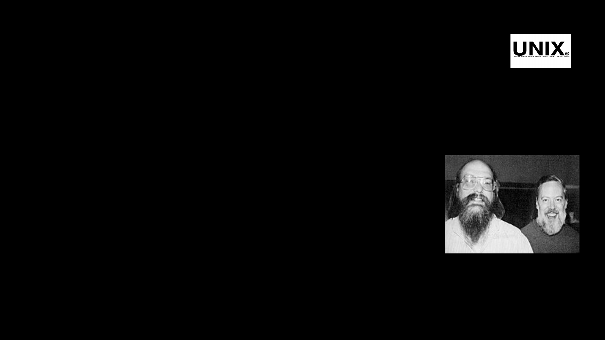

amirkabir_linux_festival
introduction_to_linux

history_of_linux

the_old_days:
• Imaginecomputersasbigashouses,evenstadiums.Whilethesizesofthose
computersposedsubstantialproblems,therewasonethingthatmadethis
evenworse:everycomputerhadadifferentoperatingsystem.
• Softwarewasalwayscustomizedtoserveaspecificpurpose,andsoftwarefor
onegivensystemdidn'trunonanothersystem.Beingabletoworkwithone
systemdidn'tautomaticallymeanthatyoucouldworkwithanother.Itwas
difficult,bothfortheusersandthesystemadministrators.

early_operating_systems
multics:
• Multics(MultiplexedInformationandComputingService)wasamainframetime
-sharingoperatingsystemthatwasdevelopedinthe1963-1969periodthrough
thecollaborationoftheMassachusettsInstituteofTechnology(MIT),
GeneralElectric(GE),andBellLabs(AT&T).
• TheoperatingsystemwaswritteninPL/IandranonGEhardware.

unix:
• By1970,BellLabshadwithdrawnfromtheMulticsproject.
• KenThompson:
“IdidthefirstoftwoorthreeversionsofUNIXallalone.AndDennis
becameanevangelist.Thentherewasarewriteinahigher-level
languagethatwouldcometobecalledC.Heworkedmostlyonthe
languageandontheI/Osystem,andIworkedonalltherestofthe
operatingsystem.ThatwasforthePDP-11,whichwasserendipitous,
becausethatwasthecomputerthattookovertheacademiccommunity.”
• UNIXisthefirstfreeOperatingSystem

• WrittenintheCprogramminglanguageinsteadofinassemblycode.
• Simpleandelegant.
• Abletorecyclecode.
• UNIXontheotherhandneededonlyasmallpieceofthatspecialcode,whichisnowcommonlynamedthekernel
• softwarevendorswerequicktoadapt,sincetheycouldselltentimesmoresoftwarealmosteffortlessly
• usersworkingondifferentsystemswithouttheneedforextraeducationtouseanothercomputer
bsd:
• BSD(BerkeleySoftwareDistribution)wasthefirstmajorvariantofunix
createdatUniversityofCaliforniaatBerkeley.
• theBSDandBellLabsversionsofUNIXheadedoffinseparatedirections.BSDcontinuedforwardinthe
free-flowing,share-the-codemannerthatwasthehallmarkoftheearlyBellLabsUNIX,whereasAT&T
startedsteeringUNIXtowardcommercialization
• FreeBSD
• NetBSD
• OpneBSD
gnu:
• GNU(GNUisNotUNIX)wasstartedin1983byRichard
Stallman.
• GNUwasintendedtobecomearecodingoftheentireUNIXoperatingsystem
thatcouldbefreelydistributed
• https://www.gnu.org/gnu/thegnuproject.html
• By1990,theGNUsystemwasalmostcomplete;theonlymajormissing
componentwasthekernel.Initiallythecomponentsrequiredforkernel
developmentwerewritten:editors,shell,compiler
• the GNU Hurd is a collection of servers (i.e., a herd of GNUs) that run on top of
Mach, and do the various jobs of the Unix kernel.
• GNU/Hurdwasnotsuccessful

free_or_opensource

A program is free software, for a particular user, if:
• You have the freedom to run the program as you wish, for any purpose.
• You have the freedom to modify the program to suit your needs.
• You have the freedom to redistribute copies, either gratis or for a fee.
• You have the freedom to distribute modified versions of the program, so that the community can
benefit from your improvements.

CopyleftAndGPL(GBUGeneralPublicLicense):
• insteadofameansforrestrictingaprogram,itbecomesameansforkeepingtheprogram
free.Thecentralideaofcopyleftisthatwegiveeveryonepermissiontoruntheprogram,copy
theprogram,modifytheprogram,anddistributemodifiedversionsbutnotpermissiontoadd
restrictionsoftheirown.
• GPLwaswrittenbyStallmanin1989
Basic features of the GNU Public License include the following:
• Author Rights — The original author retains the rights to his or her software.
• Free Distribution — Source code must be included with the distribution.
• Copyright Maintained — The Original GNU agreement maintained .
• Stallmanexplains:"Thetwotermsdescribealmostthesamecategoryofsoftware,buttheystand
forviewsbasedonfundamentallydifferentvalues.Opensourceisadevelopmentmethodology;
freesoftwareisasocialmovement."
Open Source:
minix(minimalunix):
• MINIXisaunixbaseOSoriginallydevelopedin1987by
AndrewS.Tanenbaumasateachingtoolforhistextbook.
• Duringtheearly1990s,MINIXwaspopularamonghobbyistsanddevelopers
becauseofitsinexpensiveproprietarylicense.However
• MINIXusesamicro-kernel.
linux:
• Bythebeginningofthe90shomePCswerefinallypowerfulenoughtorunafullblownUNIX.
• In1991,whileattendingtheUniversityofHelsinki,Torvaldsbecamecuriousabout
operatingsystems.FrustratedbythelicensingofMINIX,whichatthetimelimiteditto
educationaluseonly.Hethoughtitwouldbeagoodideatohavesomesortoffreely
availableacademicversionofUNIXsohebegantoworkonhisownoperatingsystem
kernel,whicheventuallybecametheLinuxkernel.
• TorvaldsbeganthedevelopmentoftheLinuxkernelonMINIXandapplicationswritten
forMINIXwerealsousedonLinux.
From:torvalds@klaava.Helsinki.FI(LinusBenedictTorvalds)
Newsgroups:comp.os.minix
Subject:Gcc-1.40andaposix-question
Message-ID:
Date:3Jul9110:00:50GMT
Hellonetlanders,
DuetoaprojectI'mworkingon(inminix),I'minterestedintheposix
standarddefinition.Couldsomebodypleasepointmetoa(preferably)
machine-readableformatofthelatestposixrules?Ftp-siteswouldbe
nice.

Helloeverybodyoutthereusingminix-
I'mdoinga(free)operatingsystem(justahobby,won'tbebigand
professionallikegnu)for386(486)ATclones.Thishasbeenbrewing
sinceapril,andisstartingtogetready.I'dlikeanyfeedbackon
thingspeoplelike/dislikeinminix,asmyOSresemblesitsomewhat
(samephysicallayoutofthefile-system(duetopracticalreasons)
amongotherthings).
I'vecurrentlyportedbash(1.08)andgcc(1.40),andthingsseemtowork.
ThisimpliesthatI'llgetsomethingpracticalwithinafewmonths,and
I'dliketoknowwhatfeaturesmostpeoplewouldwant.Anysuggestions
arewelcome,butIwon'tpromiseI'llimplementthem:-)
Linus(torvalds@kruuna.helsinki.fi)
PS.Yes-it'sfreeofanyminixcode,andithasamulti-threadedfs.
ItisNOTprotable(uses386taskswitchingetc),anditprobablynever
willsupportanythingotherthanAT-harddisks,asthat'sallIhave:-(.